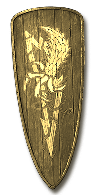
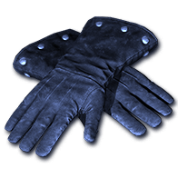
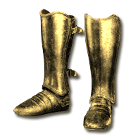

Faster pulses and storm spawning, up to +50% from items. Whole-frame breakpoints apply: Fissure first improves at +20%. Blizzard does not read this stat. Sanctuary also knocks back more often. Casting speed and duration stay the same.
+50% rate from items+#% Faster Pulse RateApplies to the supported skills below.
9 supported skills
Sorceress
Necromancer
Paladin
Druid
Assassin
Warlock
Get this effect
Runewords
Magic & rare modifiers


Quickening
Magic & rare prefix
+10-15% Faster Pulse Rate- Orb
- Staff
- Grimoire
- Hand to Hand
- Helm
- Gloves
- Boots
Unrelenting
Magic & rare prefix
+16-20% Faster Pulse Rate- Orb
- Staff
- Grimoire
- Hand to Hand
- Helm
- Gloves
- Boots
Ceaseless
Magic & rare prefix
+21-25% Faster Pulse Rate- Orb
- Staff
- Grimoire
- Hand to Hand
- Helm
- Gloves
- Boots
Equipment

Thunder-Seer's Band
Coronet
+20% Faster Pulse RateRequired level 52Crown of the Vigil
Bone Visage
+10% Faster Pulse RateRequired level 80
Bulwark of Devotion
Zakarum Shield
+10% Faster Pulse RateRequired level 82
Gauntlets of Penance
Vampirebone Gloves
+10% Faster Pulse RateRequired level 78
Pilgrim's Last Road
Myrmidon Greaves
+10% Faster Pulse RateRequired level 80Oil & gem crafts


Crimson Oil
+ Perfect Skull
- Boots / Gloves / Pelt / Primal Helm / Helm / Grimoire
- +21-25% Faster Pulse Rate